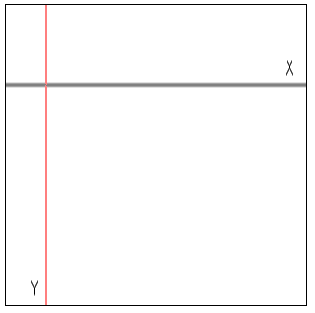
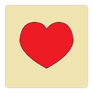
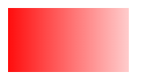
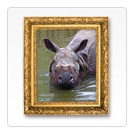

Canvas API
<canvas> element
X and Y coordinates
Setting Up the Canvas
HTML
JavaScript
const canvas = document.getElementById("canvas");
const ctx = canvas.getContext("2d");
How To Draw on the Canvas With JS
Step 1: Find the Canvas Element
Step 2: Create a Drawing Object
Step 3: Draw on the Canvas
ctx.fillStyle = "#FF0000";
ctx.fillRect(0, 0, 150, 75);
Draw a Line
ctx.moveTo(0, 0);
ctx.lineTo(200, 100);
ctx.stroke();
Draw a Circle
ctx.beginPath();
ctx.arc(95, 50, 40, 0, 2 * Math.PI);
ctx.stroke();
arc(x, y, radius, startAngle, endAngle, anticlockwise);
arcTo(x1, y1, x2, y2, radius);
Drawing shapes

quadraticCurveTo(cp1x, cp1y, x, y);
bezierCurveTo(cp1x, cp1y, cp2x, cp2y, x, y);
Gradients

createLinearGradient(x,y,x1,y1);
createRadialGradient(x,y,r,x1,y1,r1);
addColorStop()
Drawing Text on the Canvas
font;
fillText(text, x, y [, maxWidth]);
strokeText(text, x, y [, maxWidth]);
Images

drawImage(image, x, y, width, height);
HTMLImageElement
SVGImageElement
HTMLVideoElement
HTMLCanvasElement
Animation